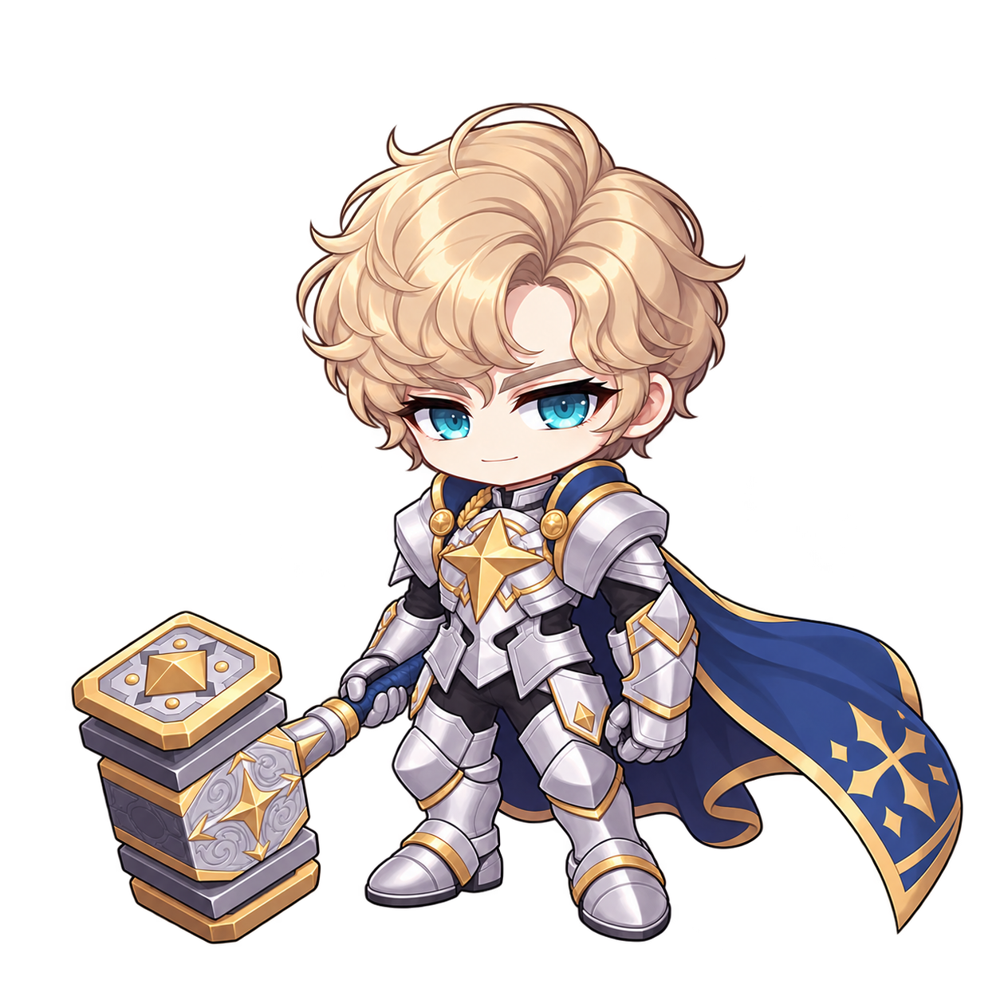
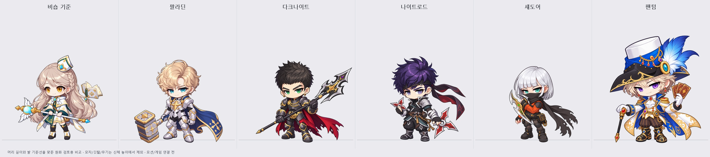

팔라딘


사용자가 선택한 비숍 기준 수정 원화를 각 직업 폴더의 concept.png에 저장했습니다. 팬텀은 아래쪽 마지막 수정본입니다. 이전 원화는 작업 기록 폴더에 보관했습니다. 모션 제작·리소스 연결은 후속 작업입니다.

제자리 몸 회전, 붉은·금빛 잔상, 전방 나선 카드 흐름을 관찰했습니다. 원화에는 짙은 적갈색 바탕·금색 테두리·중앙 별 문양의 카드 뒷면을 반영했습니다. 모션은 원화 확정 뒤 준비·회전 루프·복귀로 제작합니다.
영상 전체 흐름 · 캐릭터 회전 확대 · 관찰 기록